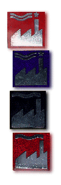

|  |
To fans of Factory Records and its associated labels, and of course the myriad bands who record or who have recorded for the great label/s (e.g A Certain Ratio, Happy Mondays, New Order, Durutti Column, Section 25, Stockholm Monsters, Railway Children, Joy Division etc)... the Factory mailing list is available for open discourse. Spammers of unrelated matters will be either a) shot, or b) forced to listen to the collected works of the Adventure Babies. The list's home page to log in via the web and (un)subscribe, post, check the archive, etc., is at http://groups.yahoo.com/group/faclist Other cool lists:Email or click for more information... |